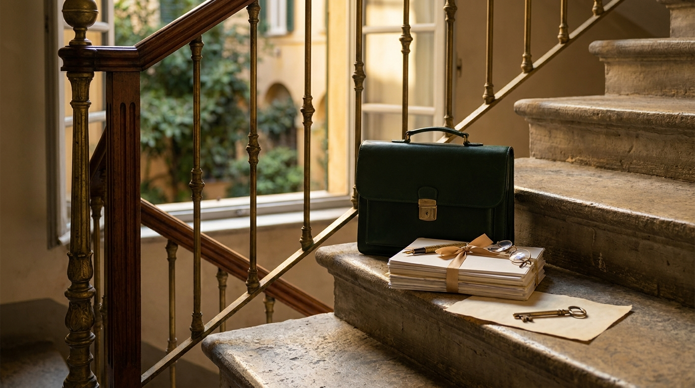

Caduta sulle scale condominiali: la prova del danno spetta al danneggiato
Chi cade sulle scale del proprio condominio non ottiene automaticamente il risarcimento. Il custode risponde in via oggettiva ai sensi dell'art. 2051 c.c., ma è il danneggiato a dover dimostrare che l'anomalia del bene ha effettivamente causato la caduta. Senza prova del nesso causale, spesso affidata a testimoni, la domanda viene respinta.

Il caso e perché conta
Una caduta sulle scale condominiali è un evento più frequente di quanto si pensi: un gradino sconnesso, una sostanza scivolosa, l'illuminazione insufficiente. La domanda pratica è semplice: chi paga i danni?
La risposta non è automatica. Una pronuncia della Corte d'Appello di Reggio Calabria (sent. n. 119/2021) ha ribadito un principio consolidato: la responsabilità del condominio esiste, ma il danneggiato deve provare il legame tra il difetto della cosa e la caduta. In assenza di questa prova, il risarcimento non è dovuto.
Inquadramento normativo
Le scale rientrano tra le parti comuni dell'edificio ai sensi dell'art. 1117 del Codice civile. Di conseguenza il condominio ne è il custode e risponde dei danni secondo l'art. 2051 c.c., che disciplina la responsabilità per danni da cose in custodia.
È una responsabilità di tipo oggettivo: il danneggiato non deve dimostrare la colpa del condominio o dell'amministratore. È sufficiente provare due elementi: l'esistenza di un'anomalia della cosa (il gradino rotto, la sostanza oleosa) e il nesso causale, cioè il fatto che proprio quell'anomalia ha provocato l'evento dannoso.
Il condominio, dal canto suo, può liberarsi dalla responsabilità solo dimostrando il caso fortuito: un fattore esterno, imprevedibile ed eccezionale, idoneo da solo a causare il danno. Rientra in questa categoria anche la condotta gravemente disattenta dello stesso danneggiato.
La prova del nesso causale può essere fornita anche per presunzioni, secondo l'art. 2727 c.c.: il giudice risale da un fatto noto a uno ignoto. Ma le presunzioni devono essere gravi, precise e concordanti. Da qui il peso decisivo dei testimoni oculari, capaci di collocare la caduta nel punto esatto e di descrivere lo stato dei luoghi in quel momento.
Implicazioni pratiche
Per chi subisce la caduta il punto critico non è stabilire che il condominio sia responsabile in astratto, ma costruire la prova concreta dell'accaduto. Una caduta senza testimoni, senza documentazione dello stato dei luoghi e senza un referto medico immediato è una posizione processuale fragile.
Il condominio, di solito tramite l'amministratore e la compagnia assicurativa, tende a contestare proprio il nesso causale: sostiene che la caduta sia dipesa da disattenzione, calzature inadeguate o una causa diversa dal difetto lamentato. Se manca la prova, questa linea difensiva vince.
È bene anche ricordare che il danno deve essere documentato nella sua entità: lesioni, periodo di inabilità, spese mediche. La sola dinamica accertata non basta a quantificare il risarcimento.
Cosa fare in concreto
- Documenta subito lo stato dei luoghi. Scatta fotografie del gradino, della sostanza presente, dell'illuminazione, indicando data e ora. È la prova più difficile da costruire dopo.
- Raccogli i recapiti dei testimoni presenti al momento della caduta, anche se sembrano dettagli marginali. La loro testimonianza è spesso decisiva sul nesso causale.
- Recati al pronto soccorso senza ritardo. Il referto contestuale collega temporalmente le lesioni all'evento e ne attesta l'entità.
- Segnala l'accaduto all'amministratore per iscritto, con raccomandata o PEC, chiedendo che la situazione venga verbalizzata e l'anomalia rimossa.
- Consigliamo di valutare con un legale la consistenza della prova prima di avviare l'azione: una domanda priva di riscontri sul nesso causale rischia il rigetto con condanna alle spese.
In sintesi
La responsabilità oggettiva del condominio non equivale a un risarcimento garantito. Il sistema scarica sul danneggiato l'onere di provare che il difetto della cosa ha causato la caduta. La differenza tra ottenere il risarcimento e vederselo negare si gioca quasi sempre sulla prova, raccolta nei minuti e nei giorni immediatamente successivi all'evento.
Contributo informativo a cura di Tamburro & Partners - Avv. Giuseppe Tamburro. Non costituisce parere legale.
Ogni condominio ha una storia a sé.
Se gestisci un'amministrazione e vuoi un confronto su una specifica questione condominiale, scrivi allo studio. Ti rispondiamo entro un giorno lavorativo.